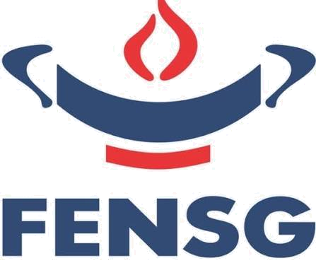

Encontro 4 · Material de apoio
Matriz de priorização
Os problemas finalistas vieram das fichas da turma. Agora escolhemos um deles para virar o protótipo, com critérios combinados antes da votação.
- Cada estudante dá, sozinha, uma nota de 1 a 5 para cada problema em cada critério.
- A professora digita aqui a média da turma em cada célula.
- Problema que exige dados reais de pacientes ou integração com sistemas do serviço sai da disputa.
- Vence a maior soma. Em caso de empate, as professoras decidem pela viabilidade.